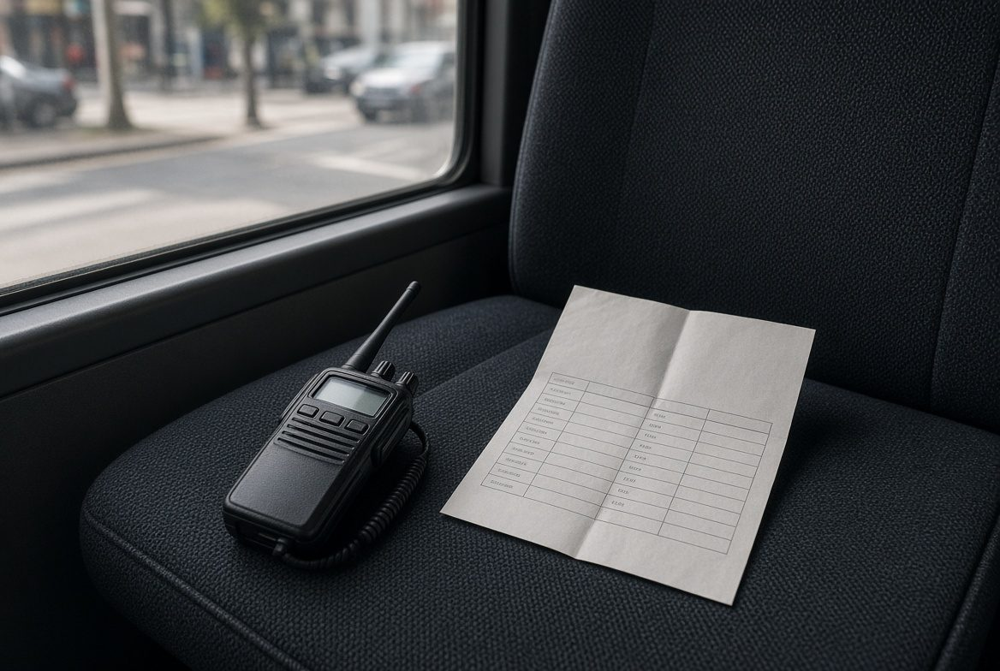

Antes
El rooming no vive en la cabeza
Expediente, timing con margen, briefing que el hotel y el conductor pueden ejecutar. Si no está escrito, no existe.

Si el martes sales con 40 personas, esto es para ti. Campo o mesa. Leisure, incentivo, congreso, evento, crucero o deporte. Lo que no está en el máster y sí en el walkie.


Para quién
Acompañas · campo
El grupo te mira a ti cuando el plan se tuerce.
Preparas · mesa
Quien escribe el briefing y vive el WhatsApp de madrugada.
El grupo
No hace falta venir de MICE.
Posicionamiento
Es
No es
Método Tierra
No es un framework de consultora. Es lo que Andrea hace con cada grupo, pasado a aula.
Antes
Expediente, timing con margen, briefing que el hotel y el conductor pueden ejecutar. Si no está escrito, no existe.
En la calle
A quién llamas. Qué no dices al grupo. Plan B en diez minutos. El día feo se entrena.
Cierre
Debrief corto. Lo que se aprende se escribe, para que el siguiente grupo no pague el mismo error.
Quién enseña
CEO de Por Aquí Conmigo. Más de 15 años coordinando y moviendo grupos. El martes sigue saliendo a la calle.
«No te pido que seas más simpática. Te pido que el martes no dependas de la memoria.»
Quiénes somosPrograma
Expediente modelo, checklist de salida, briefing, runsheet, protocolo de incidencias y plantilla de handover.
Ver programa y semanaTres situaciones de operación
Casos compuestos del oficio. No son reseñas de alumnas.
Palma · leisure · guía
Vivía en la cabeza. Pasó al expediente. El check-in dura lo que tiene que durar.
Madrid · incoming · ops
Lo que no estaba escrito. El briefing al conductor cortó ese WhatsApp.
Sevilla · incentivo · coordinadora
Antes improvisaba. Con la cadena de mando supo a quién llamar y qué no decir al grupo.